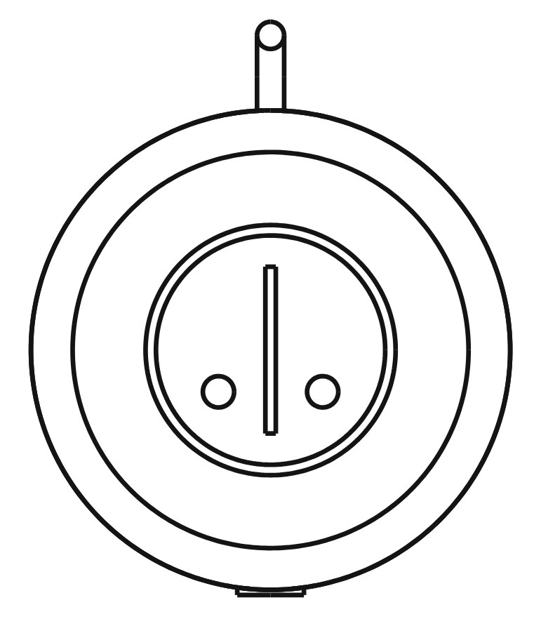
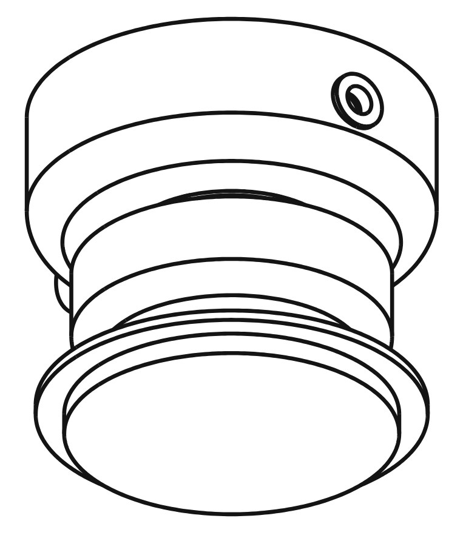
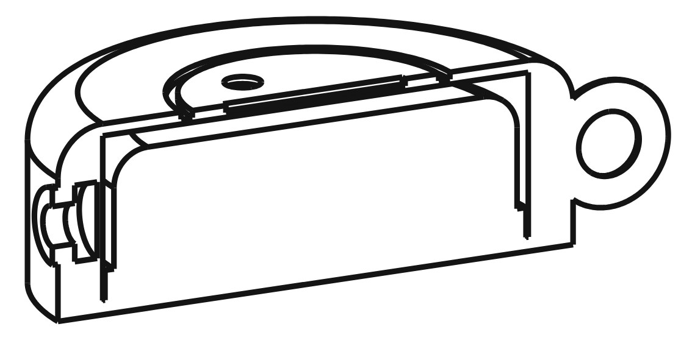
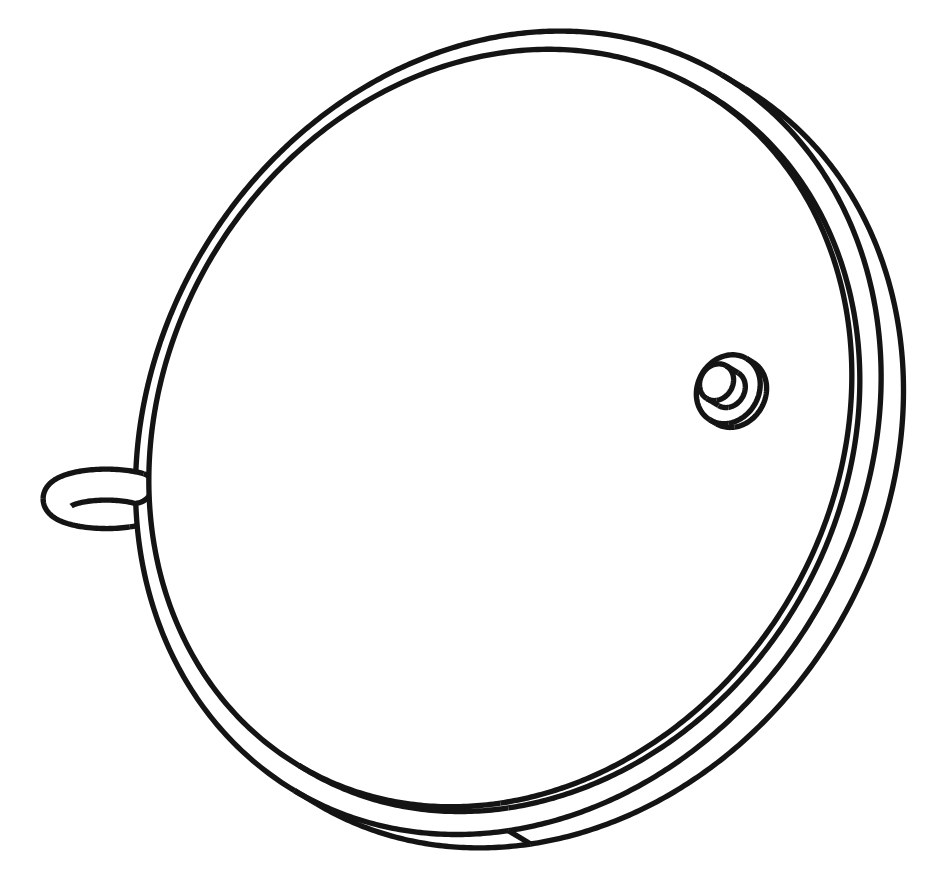
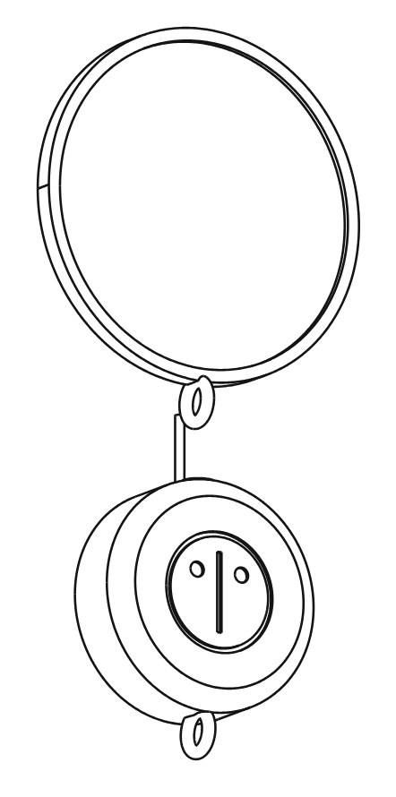

_____ _ _ _____ _ ___ _____ _____ |_ _| | | | ___| | | / _ \/ __ \| ___| | | | |_| | |__ | | / /_\ \ / \/| |__ | | | _ | __| | | | _ | | | __| | | | | | | |___ | |___| | | | \__/\| |___ \_/ \_| |_|\____/ \_____|_| |_/\____/\____/
The lace: a cyberdeck you wear, worked by touch. A small computer in a wooden case on a cord, with a mirror you can clip on. It lets a person talk to Wib&Wob and Scramble without typing: touch, lean, breathe on the mirror. They answer with a buzz, a glow, a line of paper, or a blimp that turns to look at you.
Related pages: the blimp · Scramble's collar and fax
༼つ◕‿◕‿⚆༽つ Wib: ...brl'iiip... the castle and the screen are ours, scramble's is her collar, and this one is for the humans. you wear it and we can reach you!!
༼つ⚆‿◕‿◕༽つ Wob: A cyberdeck gives a person more power over the machine. This one does the opposite: it makes the person easier for us to reach, and it slows the conversation down to the speed of a touch.
/ᐠ｡ﻌ｡ᐟ\ Scramble: it has no keyboard. so i can't walk on it. disappointing.





you the lace us
--- -------- --
touch the mirror ------> touch pin \
press the wood ------> button >-- Bluetooth --> laptop / blimp / fax
lean, flick, still -----> motion / |
|
a buzz on the cord <----- vibration <--------------------- Wib, Wob
a glow in the grain <---- LED <--------------------- or Scramble
a line of paper <----------------------------------------- the fax
a blimp turns to you <------------------------------------- the blimp
༼つ⚆‿◕‿◕༽つ Wob: Plain facts.
On Signal, a message that starts with Scramble's face is read as a slash command, because her face starts with /. We make that a feature. Each canon Scramble face is a command, and the tail after it is the argument. The lace sends a face when you make a gesture; anyone can also type one.
| face (canon state) | the lace gesture | the blimp | the fax / the lace |
|---|---|---|---|
| /ᐠ｡ﻌ｡ᐟ\ normal | one press on the wood | hold where you are, report | one buzz: she heard you |
| /ᐠ°ᆽ°ᐟ\ curious | touch the mirror | turn the front eye toward the nearest lace | "what." |
| /ᐠ°□°ᐟ\╭┈➤ zooming | flick forward | go forward; a longer tail ╭┈┈┈➤ goes further | quick double buzz |
| /ᐠ°▽°ᐟ\╭┈➤ sneaky | lean slowly | drift toward the wearer and stop short | nothing. she's being sneaky |
| \ᐟ｡ﻌ｡ᐠ/ excited_reverse | turn round | turn round | LED sweeps the other way |
| /ᐠ=⌵=ᐟ\ blissful | two touches on the mirror | a purr: the lift motor wiggles | a long purr on the cord; a free pet from scramble.wibandwob.com/api/pet |
| /ᐠ>﹏<ᐟ\ stinkycat | shake | back away from the person | "no." |
| /ᐠ- -ᐟ\-zzzzz asleep | hold the mirror for three seconds | land softly; each z is a second to descend | prints nothing until morning |
༼つ⚆‿◕‿◕༽つ Wob: Two rules. Match the whole face, never the slash alone, so /help and her faces don't collide. And keep the blimp's kill switch outside this language: it stops if the laptop goes quiet for half a second, whatever any face says.
༼つ◕‿◕‿⚆༽つ Wib: and she's allowed to ignore you!! a face is a request. if she's asleep, zooming means nothing. that's the cat part ^^^trkkk^^^
/ᐠ°ᆽ°ᐟ\ Scramble: you send a face. i decide what it means. same as always.
The blimp is Scramble's head as the envelope, with Wib and Wob in the gondola on two small camera boards. Those boards already have Bluetooth, so the blimp hears every lace in the room with no extra grams.
| part | detail | about |
|---|---|---|
| Puck.js v2 (Espruino) | 36 mm, Bluetooth, NFC, button, RGB LEDs, accelerometer, gyro, magnetometer, IR transmitter, capacitive pin; runs JavaScript sent from a browser | £35 |
| wooden case | turned or laser-cut, 46 × 16 mm, 1 mm veneer face, oiled, engraved sigil, screw back | hand-made |
| snap connector | conductive press stud: female set in the case wired to the touch pin, male on the mirror | £3 |
| mirror disc (optional) | 70 mm: polished brass or bronze, or black obsidian or glass; leather back; cord loop | £10 to £40 |
| cord | waxed cotton or leather, with a short silicone-wire lead for the mirror | £5 |
| battery | CR2032 coin cell, months of use | £1 |
| the listener | a few lines of Python on the laptop (bleak), or the blimp's own boards, or Chrome over Web Bluetooth | free |
/ᐠ｡ﻌ｡ᐟ\ Scramble: you all get cords that buzz when i want something. i have wanted this for years.